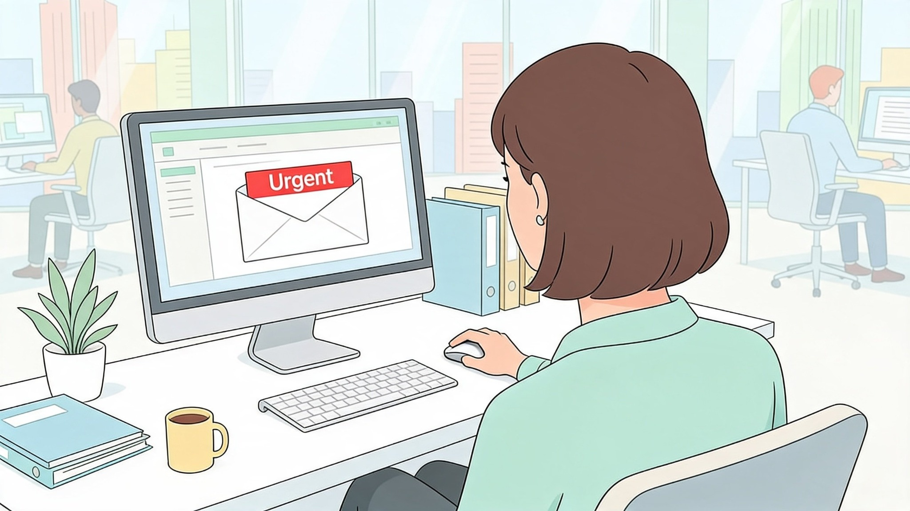

Ao longo da jornada, vimos que cybersecurity não é um produto isolado nem uma ação realizada apenas uma vez.
Segurança é construída todos os dias por meio de hábitos, processos, ferramentas e decisões conscientes.
Pessoas capacitadas podem identificar mensagens suspeitas, proteger credenciais, perceber comportamentos anormais e comunicar incidentes antes que se tornem maiores.
O fator humano não precisa ser tratado apenas como vulnerabilidade. Quando existe treinamento e atenção, ele se transforma em parte ativa da defesa.
Analise remetentes, links e anexos antes de clicar. Utilize senhas exclusivas e MFA. Proteja dispositivos móveis. Navegue de forma segura. Bloqueie a tela ao se afastar. Cuide de documentos físicos. Compartilhe dados somente com quem precisa.
E, ao perceber algo errado, comunique rapidamente.
Imagine que você recebe um e-mail urgente de um diretor com uma planilha em anexo, recebe uma ligação de alguém pedindo confirmação de login e encontra um pendrive desconhecido no escritório.
A atitude segura é verificar o remetente antes de abrir o anexo, não fornecer dados na ligação e encaminhar o dispositivo encontrado para a equipe responsável sem conectá-lo ao computador.
A segurança da informação é um processo contínuo de aprendizado e atenção.
Quando práticas seguras se tornam rotina, cada colaborador ajuda a proteger dados, colegas, clientes e a própria continuidade da empresa.
Você concluiu a Jornada de Cybersecurity. O próximo passo é transformar o conhecimento em comportamento diário.
Fim da Jornada de Cybersecurity.
Qual é a ideia central resumida no conceito de que o colaborador é a 'Primeira Linha de Defesa' da empresa?
A postura preventiva dos usuários impede que iscas e golpes atinjam a infraestrutura tecnológica.
Qual das opções a seguir representa um HÁBITO diário de cibersegurança que deve ser adotado por todos?
Hábitos seguros diários reforçam a proteção pessoal e corporativa no cotidiano.
Segurança da informação deve ser praticada:
Segurança é um processo contínuo e diário, não um evento isolado ou anual.
A melhor forma de lidar com a dúvida ao receber uma solicitação atípica de envio de dados por e-mail é:
Diante de solicitações estranhas, o comportamento correto é parar, analisar e verificar antes de executar.